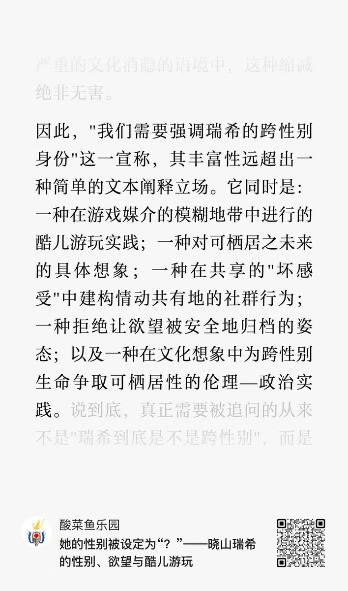
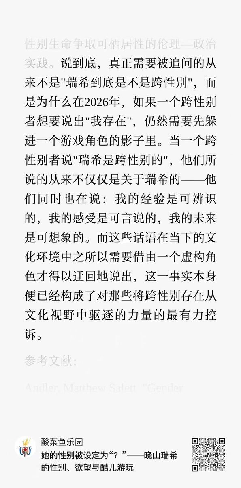

RT @transinacademia: 「真正需要被追问的从来不是"瑞希到底是不是跨性别"，而是为什么在2026年，如果一个跨性别者想要说出"我存在"，仍然需要躲进一个游戏角色的影子里。当一个跨性别者说"瑞希是跨性别的"，ta们说的从来不仅是关于瑞希的——ta们同时也在说：我…



「真正需要被追问的从来不是"瑞希到底是不是跨性别"，而是为什么在2026年，如果一个跨性别者想要说出"我存在"，仍然需要躲进一个游戏角色的影子里。当一个跨性别者说"瑞希是跨性别的"，ta们说的从来不仅是关于瑞希的——ta们同时也在说：我的经验是可辨识的，我的感受是可言说的，我的未来是可想象的。」 https://t.co/99eVvenOL8